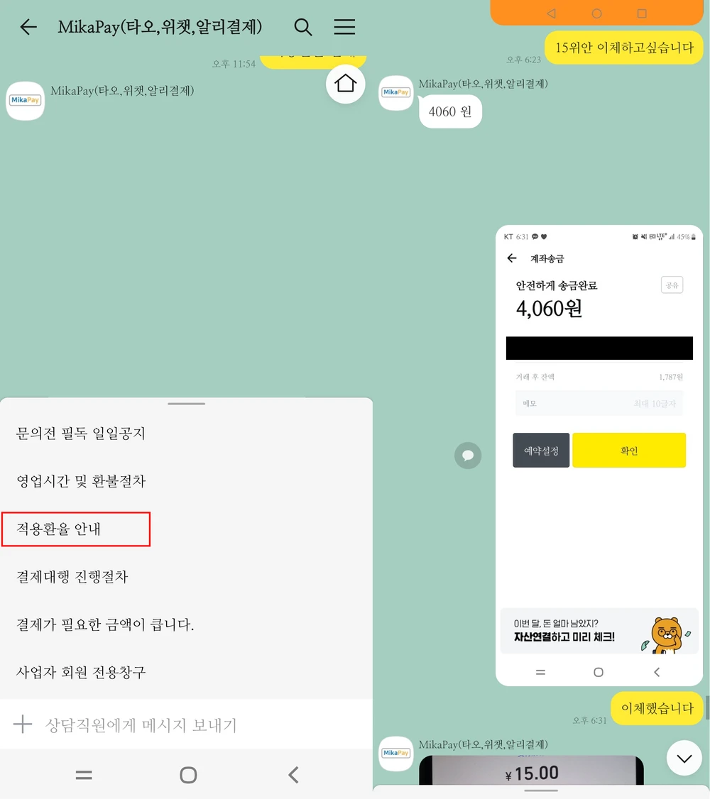
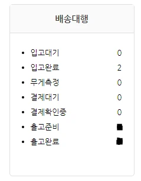

[솜인형 제작 과정]
1. 공장과 대화하기
공장과 말할 때는 파파고와 구글 번역기를 이용하면 됩니다.
你好。可以私生吗？ (안녕하세요. 개인제작 할 수 있나요?)
* 私生=사생=개인제작=공구가 아닌 개인 인형
도안을 보낼 때는 정확한 견적을 받기 위해 대략적인 정보도 쭉 서술해주는 것이 좋습니다.
일부 공장의 경우에는 공장의 X 계정에 제작 양식이 기재되어 있기도 합니다.
[바디 사이즈 / 체형 / 머리 원단 / 앞손 or 밑손 / 뼈 추가 여부 / 귀, 꼬리 고정 or 탈부착]
* 앞손은 말 그대로 손이 앞을 바라보고 있는, 밑손은 손이 밑을 바라보고 있는 것을 의미합니다.
공장 측에서 받는다고 하면 준비된 도안을 보낸 후 얼마인지 물어봅니다.
예시
20cm 正常体 (정상 체형)
普毛 (보모 원단)
* 원단의 색, 혹은 원단 컬러 번호도 같이 기재하면 좋습니다.
双马尾松紧带可拆卸 (양갈래 고무줄 탈부착)尾部磁铁可拆卸 (꼬리 자석 탈부착)
有骨 (뼈 추가)
多少钱？(얼마인가요?)
需要多长时间? (시간이 얼마나 걸리나요?)
免费修改几次？(무료 수정은 몇번입니까?)
한 공장에 견적을 물어봤다고 꼭 그 공장에서 인형을 제작할 필요는 없습니다.
아무리 정보를 열심히 찾아서 공장을 찾아갔건만 견적을 받고 마음에 들지 않을 수 있기 때문입니다.
마음에 들지 않으면
[감사합니다. 인형을 만들기로 결정하면 다시 올게요.]
하고 나가서 다른 공장을 찾아보면 됩니다.
2. 공장에 송금하기
공장에게 견적을 받았고, 해당 공장에서 제작하기로 결정했다면 이제 공장에게 돈을 송금해야 합니다.
우선 공장에게 위챗페이 혹은 알리페이 코드를 달라고 합니다.
会汇款的。(입금할게요)
有wechatpay or ailypay吗？ (위챗페이나 알리페이가 있나요?)
송금 방법은 [송금 대행업체 / 카카오페이 해외 송금] 두 가지로 나뉩니다.
1) 송금 대행업체
해외로 직접 송금하기로는 여러 어려움이 있으니 대신 송금해주는 대행업체를 찾아봅시다.
보통은 미카페이(Mikapay)를 이용합니다.
카카오톡 친구 추가로 해당 업체를 검색 후 친구 추가를 하도록 합니다.

수수료는 업체별 적용 환율에 포함되어 있습니다. 잘 확인하고 이용하도록 합시다.
환율은 네이버에서 '위안 환율'을 검색하면 대략적인 환율을 알 수 있습니다.
공장에게 받은 코드 사진을 보내고 금액을 말하면 업체에서 업체별 적용 환율로 계산한 금액을 말해줍니다.
받은 금액대로 알려주는 계좌에 송금하고 기다리면 끝입니다.
말 그대로 대행이기 때문에 잠시 기다리면 업체에서 공장 측에 송금했다고 인증 사진을 보내줍니다.
그 사진을 공장에게 보내주면 송금은 끝입니다.
2) 카카오페이 해외송금(직접)
직접 카카오페이를 이용하여 송금할 경우 위챗페이 코드는 사용할 수 없습니다.
* 카카오페이 규정상 알리페이 + 계정으로만 송금이 가능하기 때문에
되는 공장이 있고, 안되는 공장이 존재하며, 송금이 불가하다면 공장에게 알리페이 + 코드는 없는지 물어보고 다시 시도합니다.
그래도 안되거나 알리페이가 없다면 포기하고 대행업체를 이용하시면 됩니다.
하단의 [...(더보기) -> 결제 -> QR 스캔]
이후 결제를 누르고 들어가서 본인의 QR코드 밑에 있는 노란색 QR스캔 버튼을 눌러줍니다.
그리고 공장에게 받은 알리페이 큐알코드를 스캔합니다.

송금페이지가 뜨면 공장에 송금할 위안화를 입력 후,
[Pay 버튼 -> 한화 결제 금액 확인] 후 아래로 스크롤하여 결제하기로 카카오페이 결제를 완료하면 됩니다.
상단에 상세보기를 누르면 적용 환율이 나오는데, 송금 대행 수수료가 포함되지 않기에 대행 업체보다 저렴하게 이용 가능합니다.
결제를 완료하면 확인창이 뜨는데, 기본적으로 한국어로 출력됩니다.
오른쪽 상단의 지구 모양 아이콘을 클릭 시 해당 국가 언어로 번역할 수 있습니다.
사진처럼 중국어로 변환해준 뒤 캡쳐하여 공장에 해당 사진을 전달해주면 됩니다.
* 혹시 실수로 창을 닫았더라도 카카오톡 메세지로 [카카오페이] 결제 내역 알림톡이 오기 때문에 언제든 재확인이 가능합니다.
이제 공장이 제시한 기간만큼 기다리면 됩니다.
+) 급행 신청하기
공장이 제시한 기간이 너무 길다, 나는 돈으로 시간을 사고 싶다 하신 분들은
급행(=빠른 마감)이 있는지 공장에 물어보면 됩니다,
"可以Fastpass吗? 快速制作" (급행 가능한가요? 빠른제작)
급행이 가능하다고 하면 급행 신청 시 얼마나 걸리는지 물어봅시다.
만족스러운 가격과 기간이라면 급행을 신청하시면 됩니다.
사생 비용 + 급행 비용을 더하여 위와 같은 방법으로 공장에게 송금하면 됩니다.
3. 전자 자수 확인하기
송금 후 기다리고 있으면 공장 측에서 사진을 보내줍니다.
제작하려는 인형의 전자 자수 사진 입니다.
보통은 이런 식으로 회색 바탕에 자수를 놓을 도안을 보여주는 것입니다. 이 때 내가 보냈던 도안과 색이 다르다고 당황하지 말고 대략적으로 자수가 어떻게 놓이는지만 봐주면 됩니다.
만약 공장의 전자 자수가 마음에 들지 않는다면 위 사진처럼
어디를 어떻게 고쳐야 하는지 수정안을 제작해서 보내주면 됩니다.
원본 도안과 비교하면서 누락된 자수가 있는지도 꼭 확인해주세요.
4. 면피 자수 확인하기
전자 자수 확인이 완료되면 공장은 바로 면피를 제작합니다.
* 면피란, 봉제 전 원단 위에 자수를 놓은 상태를 의미합니다.
이 과정도 전자 자수와 같습니다.
누락된 자수가 있는지 확인하고, 자수 실과 원단의 컬러가 본인이 원하는 색감인지 확인합니다.
이 과정에서 마음에 들지 않는다면 전자 자수와 똑같이 수정안을 제작하고, 공장에게 보내주면 됩니다.
보통 이 과정에서부터는 추가 금액이 부여되는 경우가 있습니다.
그럴 때는 수정 금액을 지불하고 수정을 진행하시거나, 봉제까지 지켜보고 수정을 하셔도 좋습니다.
아무리 면피가 완벽하다 생각이 들어도 인형의 완성은 봉제이기 때문에 애매해질 수 있기 때문입니다.
5. 봉제 확인하기
면피까지 확인이 끝났다면 공장은 마지막 과정인 봉제를 진행합니다.
공장에서 보내준 사진을 보면 게슈탈트 붕괴가 오듯 이게 내 인형이 맞나? 라는 생각이 듭니다.
아무래도 공장은 솜을 채우고 봉합만 한 사진을 보내주기 때문입니다.
일단 전체적인 조화를 살펴봅니다.
이목구비가 원하는 크기와 원하는 위치에 잘 있는지, 턱의 비율이 너무 많지는 않은지,
미간이 너무 넓거나 좁지는 않은지 등을 확인해줍니다.
이 과정에서 수정해야 될 부분이 있다면 역시나 똑같이 수정안으로 작성해서 공장에게 보내주면 됩니다.
만약 수정할 필요가 없다면 공장에게 인형을 받고 싶다고 말하고 제작을 마치면 됩니다.
6. 인형 배송 받기
인형 제작이 끝났으니 인형을 받아야겠죠?
하지만 저희는 한국인 입니다. 중국에 살고 있지 않습니다.
고로, 중국에서 한국으로 바로 인형을 받을 수 없다는 의미입니다.
그렇기에 저희는 배송대행지(줄여서 배대지)를 이용할 것입니다.
배송대행지는 말 그대로 배송을 대행하는 곳으로
중국 공장 -> 중국 내륙 배송을 받으면
중국 -> 한국으로 해외 배송을 대행해주는 역할을 합니다.
1) 중국 공장 -> 배송 대행지
* 온리원 배송대행을 기준으로 설명합니다.
다른 배송대행지도 비슷한 형식으로 운영하고 있기에 원하는 배송대행지를 이용하시면 됩니다.
PC에서는 좌측 상단 웨이하이에 배대지 주소가 나와있습니다.
모바일에서는 마이페이지에서 확인할 수 있습니다.
순서대로 복사하여 공장에게 전달하면 됩니다.
검은색으로 가린건 개인 사서함 번호로, 해당 뒷주소(번호)가 있어야 내 앞으로 물건이 도착합니다.
회원가입을 하면 개인 사서함 번호가 나와 있습니다.
1. 사이트에서 회원가입을 한 후 좌측 상단의 [배송대행 -> 배송대행 신청]으로 들어갑니다.
2. 품목에 인형 입력 시 자동으로 'dolls'가 출력됩니다. 그대로 선택하시면 됩니다.
단가는 인형 제작에 든 총 비용을 적으면 됩니다.
인형을 복제하여 "같은 인형"이 2체인 경우 (총금액) ÷ (인형수량)을 단가로 입력, 수량에 인형 갯수를 적으면 됩니다.
트래킹 번호는 공장에게 받은 송장번호를 입력해주세요.
* 아직 공장에게 송장 번호를 받지 못했다면 트래킹 번호는 비워둔 채 진행하고 추후 수정하셔도 됩니다.

3. 사이트에서 회원가입을 한 후 좌측 상단의 [배송대행 -> 배송대행 신청]으로 들어갑니다.
4. 공장에서 인형을 잘못 보낼 수도 있으니 우측에서 일반 검수를 선택하시는 게 좋습니다.
비용이 들지만 남의 인형을 잘못 받아 들여오는 것보다는 낫습니다.
5. 아래로 스크롤을 내리면 오른쪽에 받는 사람 정보를 입력하는 란이 있습니다.
본인의 성함과 주소, 개인통관번호를 작성합니다.
통관번호 검사 시 통관번호가 일치하면 1, 일치하지 않으면 0입니다.
* 개인통관번호는 [관세청 전자통관시스템]에서 신규 발급 및 조회가 가능합니다.
개인통관번호가 없거나 불일치 시, 물건을 받을 수 없습니다.
이 과정을 거치고 나면 인형이 배대지에 도착 할 때까지 기다리고 있으면 됩니다.
2) 배송 대행지 -> 한국
배대지에 들어가 [마이페이지 -> 배송대행] 란을 보면 진행 상황이 나와있습니다.
적당히 시간이 흐른 뒤 인형이 도착하면 입고 완료로 들어가 도착한 인형을 확인합니다.

1. 검수(사진)을 요청했으므로 도착한 물건의 사진도 같이 실려 있습니다.
사진을 보고 잘 맞게 도착했는지 확인하고 출고를 진행합니다.
신청서 조회로 들어갑니다.
2. 운송 방법은 일반이나 EMS로 나뉘며, EMS가 가격이 더 나갑니다.
항공은 중국 -> 한국으로 배송할 때 비행기로 이동하는 것이고,
해운은 중국 -> 한국으로 배송할 때 배로 이동하는 것이기에
더 빠르게 받고 싶다면 항공을 선택하면 됩니다.
(물론 해운보다 가격이 더 나갑니다.)
* 솜인형 내에 자석을 심었을 때 항공을 이용하면 분실의 위험이 있습니다.
인형 내에 자석이 있는 경우에는 해운을 이용하는 것이 좋습니다.
선택이 끝났다면 배송 진행을 누른 후 무게 측정을 기다리면 됩니다.
3. 반나절에서 하루 정도 뒤에 무게 측정이 끝나면 배송비가 결정됩니다.
배대지에서 제시하는 금액만큼 나와있는 계좌로 배송비를 송금하면 끝입니다.
이제 통관이 완료되어 내 집까지 도착하길 기다리면 됩니다.
통관이 진행되면 [국민비서 구삐]에서 카카오톡으로 연락이 옵니다.
통관이 정상적으로 완료되면 완료 되었다는 말이 명시,
통관번호가 틀리거나 통관 반출 및 오류가 생기면 해당 사유가 명시되어 있습니다.
🧸 인형이 집으로 도착하면 즐거운 솜놀 하시면 되겠습니다! 🧸